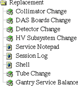

Proprietary to General Electric
Direction 5114043-800, Rev# 9
LightSpeed 3.X Service Methods (Advanced)
Proprietary to General Electric |
The Replacement Procedures selection provides access to the most frequently needed tools and diagnostics used to complete tasks associated with FRU part replacement.
Illustration 1: Replacement Procedures Icon
Illustration 2: Replacement Procedures Menu (Advanced)

The replacement procedures in this area walk the user through the procedural steps normally found in the service manual. These procedures are organized to help the user step through each test and improve the speed and efficiency of each replacement.
Use the ReplaceProc menu to access the following tools and diagnostics:
This procedure directs the user through the steps necessary to test the replacement of the collimator. The steps consist of different tools, linked together in step-by-step fashion, to aid in the verification of correct system operation after the FRU change. As each test completes, the software shades the corresponding box, to help you track the testing progress.
These tests walk the user through verification of a DAS board change, in the same manner as the collimator change.
The detector change step-by-step procedure involves several steps of the alignment procedure, as well as calibration.
The High Voltage Subsystem Change menu contains a collection of the tools used most frequently when a change is made in the HV Subsystem.
Use this option to create a message for GE InSite and other Field Engineers. It appears on the Health page.
Displays Field Engineer comments, InSite comments, Tool and Diagnostic Start Messages, and what images InSite has reviewed. Also allows input to create a message for GE InSite and other Field Engineers. It appears on the Health page.
Presents a window that enables you to enter IRIX and UNIX commands, start scrips that perform a series of commands, or start programs. Press <ALT>-<F12> to exit the shell when it is no longer needed.
Specific steps for these change procedures guide the user through the normal checkout phases after the x-ray tube has been changed.